Twenty20 (T20) cricket unfolds as a dense sequence of discrete, high-stakes events — up to 120 legal deliveries per innings, each one capable of shifting the tactical picture a coaching staff must reason about. Most machine-learning decision-support proposals for cricket, however, are scoped to a small number of fixed checkpoints (a pre-match estimate, an innings break, a handful of designated pauses in play) rather than the full, continuous sequence of decision points a real innings actually presents. This paper presents BOLT (Ball-by-ball Optimization for Live Tactics), a real-time decision-support system that produces a single, ranked, auditable tactical recommendation after any delivery in a T20 innings, not a fixed subset of them. BOLT trains 28 narrowly scoped machine learning components — 15 for the bowling side and 13 for the batting side — each targeting one tactical facet of the game, using gradient-boosted trees (LightGBM, XGBoost, CatBoost), classical classifiers (logistic regression, random forest, k-nearest neighbours, Gaussian naive Bayes), and a survival-analysis (Cox proportional -hazards) model. Every model is trained on point-in-time features computed cumulatively from the balls already bowled or faced, so that no feature can leak information about a delivery that has not yet occurred, and every model uses a match-level (never row-level) train/test split to prevent information leakage across deliveries of the same match. A central empirical contribution of this paper is a controlled ablation: for the bowling side, an identical set of 15 algorithms and hyperparameters is trained twice — once restricted to a small set of discrete snapshot overs (Model Suite A, 1,450–9,420 training rows per model), and once on the (near-)full delivery-level dataset (Model Suite B, 55,163–58,072 rows per model, a 6- to 38-fold increase) — to directly measure what continuous per-ball coverage costs or gains relative to a narrowly scoped alternative. The result is genuinely mixed and reported without adjustment: eight of the twelve directly comparable bowling models improve under full-range training (one, a powerplay-specific classifier, from ROC-AUC 0.772 to 0.904), while three regression models decline, a pattern this paper traces to a specific, testable cause — early-in-spell deliveries carry inherently less predictive context than late-spell deliveries, and full-range training necessarily includes both. Model outputs are normalized onto a common signal scale, weighted by match phase and by a data-driven reliability score derived from each model's own held-out validation performance, and aggregated into per-action scores that a rule-validation layer checks against domain constraints before a natural-language recommendation is generated. The live console is demonstrated against genuinely off-checkpoint, mid-over match situations that a checkpoint-restricted design could not have served. The paper also discusses, rather than assumes away, the two central costs of continuous coverage identified in the human-factors and machine-learning literature: the risk of alert fatigue from higher-frequency automated recommendations, and the distribution-shift risk of applying a model beyond the data it was validated on — a risk this work addresses by retraining directly on the full distribution rather than extrapolating.
Keywords: cricket analytics, sports decision-support systems, machine learning, ensemble aggregation, continuous prediction, concept drift, alert fatigue, reliability weighting, explainable AI, T20 cricket, real-time systems.
A Twenty20 innings is not a small number of discrete moments; it is a sequence of up to 120 legal deliveries, each one capable of changing what the correct tactical instruction would be. A batting side losing wickets in clusters, a bowler conceding boundaries in an otherwise quiet spell, a sudden acceleration in scoring rate — each of these can matter well before, or well after, any fixed checkpoint a decision-support system might be designed around. Yet the natural engineering instinct when building a machine-learning system for a live sporting context is often to scope it to a small number of convenient checkpoints — reducing the training and validation burden, and aligning naturally with points in the game where a human decision-maker already expects to pause. This is a reasonable starting design, but it leaves the majority of an innings — every ball outside those checkpoints — without any validated, data-driven support at all.
This paper addresses a direct question: can a real-time, multi-model decision-support architecture be extended to cover every delivery in a T20 innings, rather than a small, fixed subset, without abandoning the statistical rigor (leakage-safe features, match-level validation, disclosed reliability) such a system depends on for its outputs to be trustworthy? We answer this with BOLT (Ball-by-ball Optimization for Live Tactics), a system comprising:
A central methodological concern this design raises directly is distribution shift: a model trained only on data resembling a handful of checkpoints is not validated for use elsewhere, and applying it there anyway is precisely the covariate-shift risk documented in the machine-learning literature [38]–[40]. This paper does not extrapolate around that risk; it retrains directly on the full delivery-level distribution instead, and Section IX reports what changes as a result — honestly, including three models whose held-out performance declines under the broader training regime, alongside eight that improve markedly. A second concern, drawn from the human-factors and clinical decision-support literature, is that higher-frequency automated recommendations can produce alert fatigue and habitual dismissal rather than better decisions [41]–[43]; this paper treats that risk as a genuine, open design trade-off rather than a solved problem, and Section XII-C and Section XIII discuss it directly rather than in passing.
The remainder of this paper is organized as follows. Section II reviews related work in sports analytics, continuous/streaming prediction, ensemble decision systems, concept drift, alert fatigue, and machine learning methodology. Section III identifies the gap this work addresses. Sections IV and V state the problem and research objectives. Section VI details the proposed methodology, including the ablation design. Section VII describes the system architecture. Sections VIII and IX describe the dataset and experimental setup. Section X defines the evaluation metrics used. Section XI reports results for both model suites and all 28 models. Section XII discusses these results, dataset limitations, and design trade-offs. Section XIII positions the system against comparable approaches. Sections XIV and XV conclude and outline future work.
Wickramasinghe's systematic review of two decades of cricket machine learning research documents a field that has moved well beyond simple summary statistics into supervised prediction of match outcomes, player performance, and team selection [1]. Within the T20 format specifically, Priya et al. applied logistic regression and random forest classifiers to in-match win prediction [2], and Shenoy et al. systematically compared logistic regression, support vector machines, Bayesian networks, and decision trees for T20 outcome prediction [3]. Chakraborty et al.'s T20 forecasting benchmark reinforces a pattern visible across this literature: gradient-boosted and ensemble methods tend to outperform single linear or single-tree baselines on this class of problem [4], consistent with this paper's own choice to build the majority of its 28 models on gradient-boosted trees (Section VI-E). Lokhande et al. forecast bowler economy using XGBoost, random forest, and support vector regression on One-Day International data [6], the same algorithm family and a closely related target to this paper's Economy Predictor (W1); Srikantaiah et al. applied comparable techniques to predicting outcomes in a major T20 franchise league [7]. Kumar et al.'s broader survey situates all of this cricket-specific work within a wider trend of applied analytics adoption across professional sport [8].
Most directly relevant to this paper's central design question is a smaller body of work on prediction systems that update continuously, at every event, rather than at a small number of checkpoints. Lock and Nettleton use random forests to estimate win probability before every play of an NFL game, re-estimating at each discrete event rather than a handful of checkpoints [33] — the closest non-cricket precedent for the per-delivery design this paper adopts. Within cricket specifically, Asif and McHale's dynamic logistic regression model for in-play One-Day International win probability explicitly models a live, evolving match state rather than a static pre-match feature vector [5], and Akhtar and Scarf demonstrate session-by-session in-play forecasting for Test cricket that updates as data accrues through a match [34]. Viswanadha et al. show that per-over T20 win-prediction accuracy itself changes systematically as an innings progresses [35], a finding this paper's own results are consistent with (Section XII-B). Lamsal and Kahle provide a recent academic treatment of in-game cricket win prediction specifically [37], and Allen and Savala discuss how continuous, in-game prediction outputs are evaluated and used for live decisions in baseball [36]. None of this literature, however, addresses tactical action recommendation at every delivery — win-probability estimation is a different, though related, prediction target from the ranked tactical actions this paper's decision engine produces.
Bonidia et al.'s systematic review of computational intelligence in sports finds decision-support applications distributed across many sports and stages of play [9]. The clearest published precedent for an AI system that produces ranked, explainable tactical recommendations for human coaches is Wang et al.'s TacticAI, developed with a professional football club to recommend corner-kick strategies and found, in controlled evaluation, to produce suggestions judged competitive with human experts [10]. TacticAI addresses a single, narrowly bounded tactical situation with one learned model, rather than a continuously evolving, innings-wide sequence of decisions combined from many independently trained specialists; Section XIII returns to this comparison. Xu et al. describe a sports strategy decision-support system built around deep reinforcement learning [11]; Pietraszewski et al.'s meta-analysis across thirteen sports finds tactical decision support to be one of the fastest-growing AI application categories in sport [12]; and Kranzinger et al.'s scoping review of explainable AI in sports science identifies interpretability as a largely unmet need in fielded systems [13] — a gap this paper's audit-trail and coverage-caveat mechanisms (Sections VII-D, XII-E) are designed to address.
A model's validity is bounded by the data it was trained on; applying it outside that range is a well-studied failure mode. Gama et al.'s survey of concept-drift adaptation formalizes the general risk of a predictive model's validity eroding as the underlying data-generating process changes or is sampled differently than during training [38]; Lu et al. extend this with a taxonomy of drift detection and adaptation strategies [39]; and Quiñonero-Candela et al.'s edited volume distinguishes covariate shift and dataset shift as related but formally distinct phenomena from concept drift proper [40]. This literature is the direct motivation for this paper's central methodological choice: rather than applying a model trained only on a narrow set of checkpoint overs to arbitrary deliveries elsewhere in the innings — precisely the kind of covariate shift this literature warns against — Section VI-D retrains directly on the full delivery-level distribution, and Section IX reports the measured effect of doing so rather than assuming it away.
A separate literature, concentrated in clinical decision support, studies what happens to human decision quality as automated recommendation frequency increases. Ancker et al. find that alert acceptance drops substantially with each additional automated reminder within a single clinical encounter [41]; Wang et al. show that repeated, frequent alerts induce habitual, largely automatic dismissal behaviour rather than considered evaluation [42]; and Eppler and Mengis's cross-disciplinary review of information overload provides the general theoretical grounding for why higher-frequency decision support can degrade, rather than improve, human decision quality [43]. This literature is engaged directly, not dismissed, in Sections XII-C and XIII: extending validated coverage from four checkpoints to every delivery is not an unambiguous improvement, and this paper treats the resulting cadence trade-off as an open design question rather than a solved one.
The principle that combining multiple predictive models can outperform any single constituent model is well established, from Dietterich's foundational treatment of ensemble methods [14] to Wolpert's stacked generalization, which frames model combination itself as a learnable problem [15] — and Breiman's random forest, itself an ensemble method, is one of the model families used directly within this paper's own suite [16]. More directly relevant to this paper's specific weighting mechanism (Section VI-F, VII-C) is the literature on dynamic and competence-based classifier selection, which argues that a fixed, uniform combination weight across ensemble members is generally suboptimal when member models differ meaningfully in reliability [17], [18]. This paper's reliability-weighting mechanism is built in this spirit but is original engineering informed by, rather than a direct reproduction of, that theoretical tradition: the reliability score is derived from each model's own disclosed, held-out validation metric rather than a learned competence function.
Kaufman et al. provide the field's canonical formulation of data leakage — broadly, the introduction into a model of information that would not be legitimately available at prediction time [19]. Kapoor and Narayanan's large-scale review across 294 papers spanning seventeen scientific fields finds leakage-driven overoptimism widespread rather than exceptional, and directly implicates the kind of row-level, non-independent data splitting this paper's match-level splitting function (Section VI-D) is designed to structurally prevent [20]. Bernett et al.'s practical guiding-questions framework for avoiding leakage in applied machine learning is comparable in spirit to the shared, single-implementation splitting function used uniformly across every model in this paper's suite [21].
Because Model Suite B (Section VI-D) trains on 6- to 38-fold more rows than Model Suite A, the effect of training-set scale on tabular gradient-boosted models is directly relevant. Silvey and Liu empirically study XGBoost, random forest, logistic regression, and neural network performance as a function of training-set size on tabular data [44]; Kalaycıoğlu et al. specifically evaluate sample-size requirements for tree-based ensemble methods (bagging, random forest, boosting) in clinical risk prediction [45]; and Mitsakakis et al. propose an empirical sample-size calculator specifically for random forest, LightGBM, and XGBoost [46]. Riley et al.'s widely cited viewpoint argues that many applied AI prediction studies use inadequately sized training data relative to what their target complexity requires [47], and Viering and Loog's review of learning-curve behaviour documents the general diminishing-returns pattern as training size grows [48] — a pattern this paper's own results (Section XII-B) are partially, but not uniformly, consistent with.
BOLT's emphasis on a fully traceable decision path sits within the broader explainable AI (XAI) literature. Lundberg and Lee's SHAP framework attributes a prediction to its input features using a game-theoretic allocation [22], and Ribeiro et al.'s LIME explains an individual prediction via a locally faithful surrogate model [23]; Molnar's reference text surveys these and related techniques [24]. This paper does not currently apply SHAP or LIME to its component models directly (Section XV). On the systems side, Crankshaw et al.'s Clipper is the standard reference architecture for low-latency online prediction serving [49], relevant to this paper's discussion (Section XII-D) of whether a live, per-ball recommendation system can meet the latency expectations of broadcast play.
The gradient-boosted tree algorithms used across the majority of this paper's 28 models trace back to Friedman's original formulation of gradient boosting [25]. Three modern implementations are used directly: Chen and Guestrin's XGBoost [26], Ke et al.'s LightGBM [27], and Prokhorenkova et al.'s CatBoost, which introduced ordered boosting specifically to counter a target-leakage effect ordinary gradient boosting can introduce via categorical-feature encoding [28]. The one survival-analysis component in this paper's suite (B2, Dismissal Risk) applies Cox's proportional-hazards model [29] to estimating in-innings dismissal risk; survival modelling of this kind has established precedent in sports science for injury-risk prediction [30], [31], and recent benchmarking work confirms classical Cox-based approaches remain competitive with more elaborate machine-learning survival models on comparably structured tabular data [32].
The literature reviewed in Section II establishes three points of departure. First, the closest existing precedent for continuous, per-event sports prediction — Lock and Nettleton's every-play NFL win probability [33] and the cricket in-play forecasting literature [5], [34], [35] — targets a single continuous outcome probability, not a ranked set of concrete tactical actions combined from many independently trained specialist models; no cricket-specific work was found that extends per-delivery prediction to actionable, ranked tactical recommendation. Second, the concept-drift and dataset-shift literature [38]–[40] establishes that a model's validity does not automatically transfer beyond its training distribution, yet applied sports-analytics systems rarely report a direct, controlled comparison of what a training-scope decision (a handful of checkpoints versus the full delivery-level distribution) actually costs or gains in held-out performance — Section XI reports exactly this comparison, honestly, in both directions. Third, the alert-fatigue and information-overload literature [41]–[43] is well developed in clinical decision support but essentially absent from the sports-analytics literature reviewed in Section II-C, despite the direct relevance of "should this system speak up right now" to any system capable of producing a recommendation at every delivery rather than a few checkpoints. This paper is positioned to address the combination of these three gaps: a continuous, per-delivery tactical recommendation system, evaluated with an explicit, controlled ablation against a checkpoint-restricted alternative, and discussed honestly against the alert-frequency literature rather than treated as a strictly dominant design.
A tactical decision-support system scoped to a small, fixed set of checkpoints leaves the majority of a T20 innings without any validated, data-driven support: a wicket cluster, a sudden momentum shift, or a bowling change opportunity that falls outside the checkpoint set receives no system input at all, regardless of its tactical significance. Extending coverage to every delivery is not, however, a free engineering choice: it requires either (a) applying existing, checkpoint-trained models to inputs unlike anything they were validated on — the covariate-shift risk documented in Section II-D — or (b) retraining on the full delivery-level distribution, which may change model performance in either direction and must be measured rather than assumed. It also raises a genuine human-factors question distinct from model accuracy: whether a system capable of speaking up after every delivery actually improves a coaching staff's decisions, or instead degrades them through the alert-fatigue mechanism documented in Section II-E. The problem this paper addresses is the design, implementation, and honest empirical evaluation — including of its own trade-offs — of a continuous, per-delivery tactical decision-support system that takes both risks seriously rather than assuming continuous coverage is a strict improvement over a checkpoint-restricted design.
This work has the following specific objectives:
BOLT is organized as a four-stage pipeline: (1) a shared feature-engineering layer that computes leakage-safe, point-in-time match-state features from raw ball-by-ball data, valid at any delivery; (2) a training layer that fits 28 independent models, each targeting one tactical facet of the game, using a single shared match-level train/test splitting function; (3) a decision-engine layer that normalizes, weights, aggregates, and rule-checks the live outputs of the subset of models relevant to a given role (bowling or batting); and (4) a presentation layer that renders the resulting decision as natural-language guidance with a transparent contribution and audit trail. The pipeline diagram in Section VII-A summarizes this arrangement; the remainder of this section details the methodological choices at each stage, including the controlled ablation design that is this paper's central empirical contribution.
All bowling-side models share one feature-construction routine that computes, for every delivery, the current bowler's running figures within their ongoing spell: runs conceded so far, legal balls bowled so far, wickets taken so far, dot balls and boundaries conceded so far, and derived rates (current economy, dot-ball percentage, boundary percentage), together with the categorical match context (venue, batting team, bowling team, innings, and a three-way match phase — powerplay, middle overs, death overs). Because every one of these quantities is a cumulative function of balls already bowled at the moment of computation, none of them can leak information about a delivery that has not yet occurred — a property that holds at any ball, not only at a designated checkpoint, which is what makes per-delivery application possible at all. An analogous routine computes the batting-side running state: current score, wickets lost, balls used and remaining, and the current run rate.
For targets that describe a bowler's future performance, a separate routine computes each bowler's eventual spell totals and subtracts the already-elapsed portion, yielding future-only quantities (future runs, future balls, future boundaries, future wickets, future dot balls, and derived future rates). By construction, these targets contain no information available at decision time.
Three consistent encoding strategies are used across the 28 models, matched to each algorithm family's native capabilities: native categorical support (LightGBM, XGBoost) with a fixed, training-fitted category vocabulary saved as a JSON manifest; a fixed one-hot column schema (logistic regression, random forest, Gaussian naive Bayes, k-nearest neighbours) re-indexed identically at inference time; and CatBoost's own ordered-boosting categorical handling. Every fitted vocabulary or schema is persisted alongside its model so that the live inference pipeline (Section VII-A) reconstructs the identical column order and width the model was trained on, regardless of which training regime (Section VI-D) produced it.
Every model in this paper uses the same match-level splitting function: the set of unique match identifiers is shuffled with a fixed random seed and partitioned 80/20 into training and test matches, and every delivery belonging to a test match is withheld from training in its entirety. This prevents the row-level leakage documented in Section II-G, under which deliveries from the same match — sharing a bowler's spell figures, a batting side's score trajectory, and other match-specific context — could otherwise appear in both training and test partitions.
For the bowling-side suite specifically, this paper trains and evaluates two complete model suites under this identical splitting methodology, differing only in which rows are eligible for training and evaluation:
Both suites use identical algorithms and hyperparameters per model (Table 0); the row-selection rule is the only methodological difference between them, by design, so that any measured difference in Section XI can be attributed to training-set scope rather than a confound. Fig. A illustrates this design.
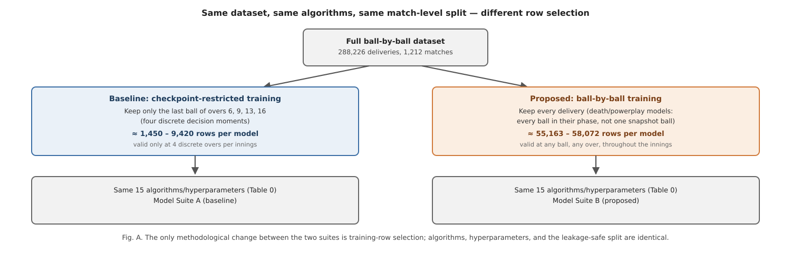
Thirteen of the fifteen bowling models are directly comparable across both suites on their primary metric (R² or ROC-AUC); the two hand-tuned formulae (W5, W10) and the one lookup-table component (W12) are reported descriptively for both suites but are not "trained" in the sense the ablation targets. For the batting side, nine of thirteen models (B1, B2, B3, B5, B6, B9, B10, B12, B13) already train on essentially the full dataset with no over restriction, one (B11) trains on the last ball of every over rather than a restricted checkpoint set, and three (B8, B14, B15) are intentionally phase-scoped (powerplay-only, death-overs-only) by design rather than checkpoint-restricted — consequently, no separate ablation retraining was performed for the batting side; Section VIII details this per model.
Model families were chosen per task according to the target's structure, not applied uniformly. Table 0 makes this explicit for every one of the 28 models.
Table 0. Algorithm choice rationale by model.
| Model(s) | Target structure | Algorithm chosen | Why this algorithm |
|---|---|---|---|
| W1, W3, W11, W14, B1, B10, B11, B14 | Continuous numeric target (economy, dot-ball %, runs, score) | LightGBM regressor | Fast, histogram-based gradient boosting handles non-linear interactions between phase, venue, and running-spell statistics well, and trains quickly enough to retrain the full 28-model suite repeatedly, including both ablation suites for the bowling side. |
| B15 | Continuous, death-overs runs-remaining target | XGBoost regressor | Regularization controls helped stabilize a target with a comparatively small, phase-restricted training sample. |
| W2, W8 | Binary target, moderate categorical cardinality | CatBoost classifier | CatBoost's native ordered-boosting categorical handling suits venue/team categorical features directly, and its built-in regularization reduces overfitting on categorical splits — particularly relevant for Model Suite A's smaller training sets. |
| W4, W13, B5, B13 | Binary target, class imbalance manageable via class weighting | Logistic regression | A transparent, low-variance baseline appropriate where the relationship is expected to be close to linear in the engineered features; class_weight="balanced" compensates directly for target imbalance. |
| W6 | Binary target, exploratory baseline | Gaussian naive Bayes | Deliberately included as the suite's simplest probabilistic classifier, providing an honest low-complexity baseline against which the gradient-boosted classifiers can be compared. |
| W7 | Binary target, higher-dimensional categorical context | Random forest classifier | Robustness to the venue/team categorical context without CatBoost's ordered-boosting machinery, at acceptable training cost. |
| W9, W15 | Binary target, phase-restricted (death overs / powerplay) | LightGBM classifier | Consistency with the LightGBM regressors elsewhere in the bowling suite, and fast retraining — relevant given both models are retrained under two different row-selection regimes in this paper's ablation. |
| B3 | Three-class target | CatBoost classifier (multi-class) | Native multi-class loss avoids a manual one-vs-rest decomposition. |
| B8, B9 | Binary target, pronounced class imbalance | CatBoost classifier | auto_class_weights="Balanced" directly addresses the imbalance visible in both models' precision/recall profile (Table III), disclosed rather than masked. |
| B12 | Binary target, expected local/non-parametric structure | k-Nearest neighbours | Tests whether a purely instance-based method captures "gap" patterns a parametric model might miss. |
| B6 | Continuous target, expected non-linear but low-dimensional structure | Random forest regressor | A robust default where gradient boosting's extra tuning surface was judged unnecessary. |
| B2 | Time-to-event target (balls until next wicket) | XGBoost, Cox proportional-hazards objective | The only target naturally expressed as time-to-event rather than bounded classification or regression. |
| W5, W10 | Tactical heuristic judged sound without a learned target | Hand-tuned scoring formula | Deliberately not fitted — see discussion below. |
| W12 | Per-bowler historical baseline | Train-only lookup table | A deliberately simple, non-learned baseline against which the suite's fitted models can be read. |
Two components (W5, bowling-change optimization, and W10, field-set optimization) are deliberately implemented as fixed, hand-weighted scoring formulae rather than fitted models, on the basis that they encode tactical heuristics judged sound without requiring a learned target; both are labelled as formulae, not models, and assigned a documented, neutral reliability weight rather than an invented accuracy figure.
Rather than trusting every model's output equally, BOLT derives a per-model reliability multiplier directly from that model's own held-out validation metric: the ROC-AUC for classifiers, the R² for regressors, the correlation between predicted and actual future values for the one lookup-table component, and a documented, neutral default for the two hand-tuned formulae. This mapping is computed independently for Model Suite A and Model Suite B, so that the decision engine's trust in a given model always reflects that specific suite's measured performance rather than a value carried over from a different training regime. Section VII-C describes exactly how this reliability multiplier combines with a phase-relevance multiplier inside the decision engine.
The system is organized into four layers, shown in Fig. 1.
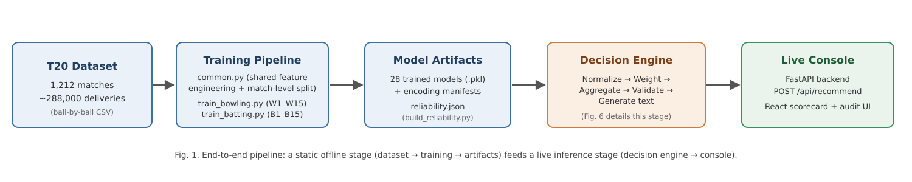
The training layer contains one shared utility module and per-role training routines. The shared module implements the feature-engineering routines described in Section VI-B, the match-level split (Section VI-D), the categorical-encoding manifests (Section VI-C), and the metric and artifact writers used identically by every model and both ablation suites. Fig. B places this in context against the checkpoint-restricted alternative.
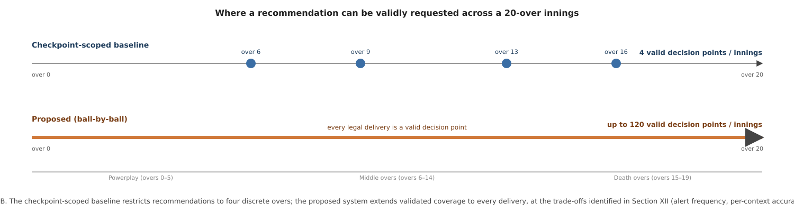
The decision-engine layer is the system's aggregation core and is organized as five single-responsibility components behind one orchestrating class:
Fig. 6 summarizes this internal data flow.
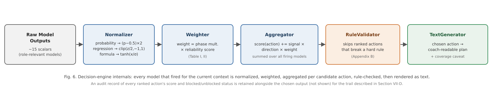
A single DecisionEngine class wires these five components together, so that
bowling-side and batting-side decisions share identical aggregation logic and
only differ in which subset of the 28 models is routed to a given call
(approximately 15 models are relevant to either role at a time, at any ball).
The live-inference layer turns a ball-by-ball scorecard payload into the model-ready feature vectors described in Section VI-B — computed identically regardless of which ball in the innings is current — loads the 28 persisted models and their encoding manifests, reproduces each model's exact training -time feature order, and passes the resulting raw scalar outputs into the decision engine. Fig. 9 traces this path as a request/response sequence.
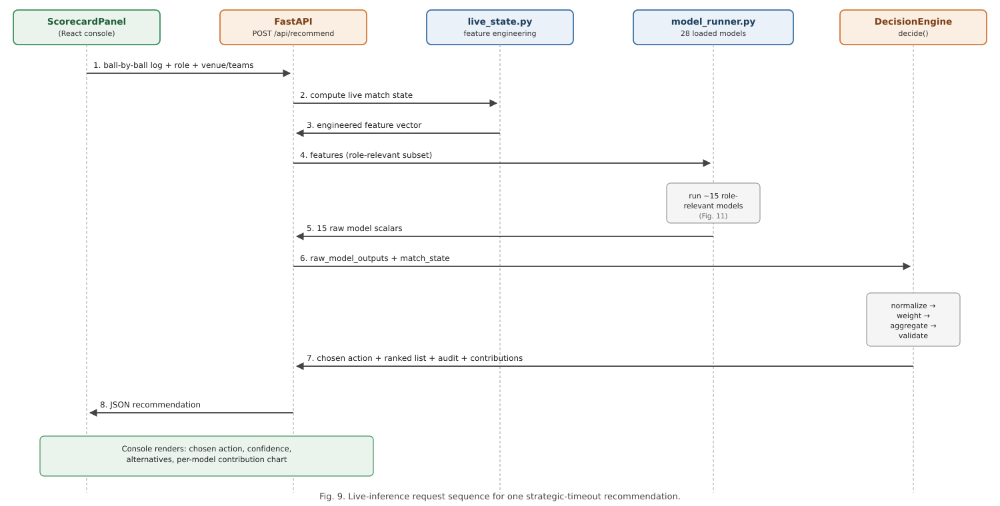
The service layer exposes a single FastAPI endpoint, POST /api/recommend,
which accepts the role, venue and team context, the full list of deliveries
bowled so far in the current innings — of any length, ending at any ball — and
an optional set of match-state overrides. The endpoint returns the chosen
action, the full ranked and audited action list, the per-model contribution
breakdown, and the raw scalar every contributing model produced.
The presentation layer is a React single-page application providing a ball-by-ball scorecard editor pre-populated with real professional-league team rosters, automatic strike-rotation and bowling-change-rule tracking, and a recommendation control that is available at any point in the innings rather than gated to a fixed subset of overs — Section VII-F demonstrates this directly.
Because the 28 models' raw outputs live on incompatible scales, the Normalizer converts every raw value onto a common [−1, +1] signal before combination. Probability-type outputs are recentred and rescaled around the neutral point of 0.5. Formula-type outputs are compressed with a hyperbolic tangent function scaled by that model's own historical output standard deviation. Regression -type outputs are converted to a z-score against that model's historical output distribution and linearly mapped so that ±2 standard deviations correspond to the signal extremes of ±1. In every case the final signal is clipped to [−1, +1].
A model's influence on the aggregated decision is the product of two independent multipliers: a phase-relevance factor reflecting that a tactic's applicability depends on where the innings currently stands, and the reliability score described in Section VI-F, loaded from whichever suite (A or B) the live system is configured to serve. The combined weight is therefore context-sensitive and evidence-sensitive rather than a static, manually assigned constant.
For every model that produced a signal, and for every candidate tactical action that model is configured to support or oppose, the Aggregator computes a signed contribution equal to the model's normalized signal, multiplied by a fixed per-model, per-action direction coefficient, multiplied by the model's context -dependent weight. Once every model has contributed, the candidate actions are ranked by score and passed to the RuleValidator, which can demote — but never invent — a recommendation: any action that violates an explicit, human-readable domain rule (Appendix B) is skipped in favour of the next highest-ranked, unblocked action, with the full ranked-and-annotated list retained as an audit trail regardless of which action is ultimately chosen.
The set of candidate actions a recommendation is chosen from is drawn from a fixed, pre-authored catalogue of granular tactical directives, each associated with the set of models that have an opinion on it and the direction of that opinion. Once the RuleValidator has produced a chosen action, the TextGenerator renders it as a short, coach-readable tactical plan grouped by target (the bowler, the field, or the batter), with a phase-appropriate core instruction and a deterministic, context-seeded justification sentence. When fewer than 60% of the role's models produced a signal in the current context, the generated text appends an explicit coverage caveat.
To demonstrate genuine per-delivery capability rather than describe it only in the abstract, the live console was exercised at two deliberately off-checkpoint, mid-over points in an innings — situations a checkpoint-restricted design (Model Suite A) was never trained or validated to handle, since neither falls on the last ball of overs 6, 9, 13, or 16.
Scenario 1 (over 3, ball 4). A bowling-role innings was scored through two complete overs and four further deliveries into a third — a genuinely mid-over, early-innings point. Fig. 12 shows the resulting dashboard, including a computed recommendation ("Mega bowl doosra yorker down leg") generated from Model Suite B despite the request falling well outside any checkpoint.
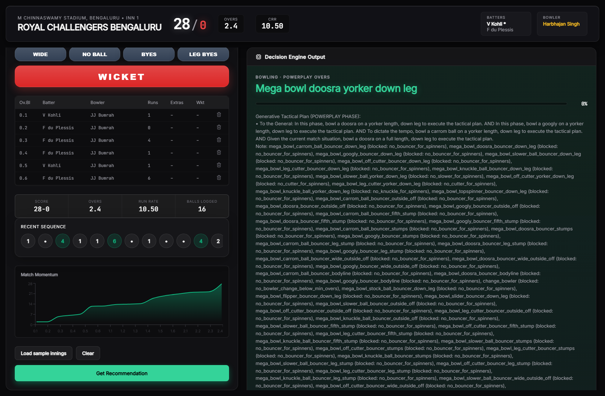
Scenario 2 (over 11, ball 3). A separate, independent scenario was built up through ten complete overs and three further deliveries into an eleventh, placing the request in the middle-overs phase, again on neither a checkpoint over nor an end-of-over ball. Fig. 13 shows the resulting recommendation ("Change the bowler"), computed and rendered identically to Scenario 1 despite the different match phase.
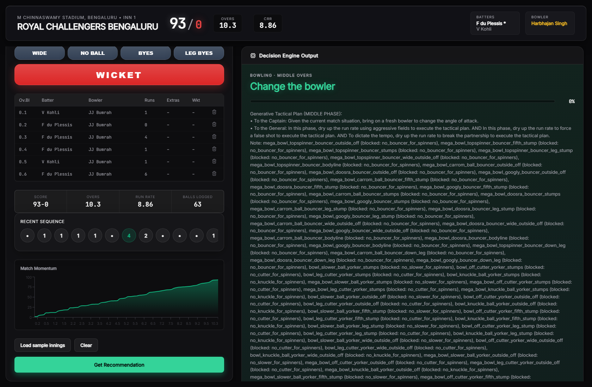
Both scenarios use the console's real, working team-roster data. Neither scenario could have been served, with any statistical validity, by a suite trained only on checkpoint-restricted data (Model Suite A); both are served here by Model Suite B, trained specifically to cover exactly this kind of request (Section VI-D).
The system is trained on a ball-by-ball record of 1,212 professional T20 franchise-league matches, comprising approximately 288,000 individual deliveries — the same raw dataset for both model suites described in Section VI-D. Each row represents one delivery and records, at minimum: a match and innings identifier; the over and ball-within-over number; the batting and bowling team; the venue; the batter, non-striker, and bowler involved; runs scored and conceded; wide, no-ball, bye, and leg-bye indicators; a wicket indicator and dismissal mode where applicable; and three mutually exclusive phase indicators (powerplay, middle overs, death overs).
From this raw record, the shared feature-engineering routines (Section VI-B) derive point-in-time features recomputed identically regardless of which delivery is current — the same computation applies whether the source is historical training data or a live, in-progress scorecard. This is what makes per-delivery application methodologically coherent: the features were never checkpoint-specific, only the historical training-row selection was, and Section VI-D's ablation isolates exactly that variable.
Three disclosed structural limitations bound what several models can measure, identical across both suites: the dataset has no field recording whether a bowler is predominantly pace or spin, no field distinguishing delivery types (yorker, bouncer, standard length), and no field recording a batter's batting-hand. Five models (Section XII-A) are consequently unable to condition on the specific tactical distinction their names suggest. The dataset is drawn from a single professional T20 franchise league; Section XII-D discusses what this does and does not license this paper's results to claim about T20 cricket more broadly.
Batting-side training-row scope, per model, is summarized here since it is not subject to the bowling-side ablation: nine models (B1, Run Projection; B2, Dismissal Risk; B3, Shot Aggression; B5, Strike Rotation; B6, Partnership Stability; B9, Spin Vulnerability; B10, Scoring Velocity; B12, Gap Analysis; B13, Wicket-Loss Mitigation) already train on essentially every delivery in the dataset with no over restriction; one (B11, Targeted Run-Rate) trains on the last ball of every over; and three (B8, Powerplay Exploitation; B14, Acceleration Capability; B15, Death-Over Optimization) are intentionally restricted to their named phase, since that scoping is what the tactic itself means, not an artefact of checkpoint selection.
All models were trained on a single machine using the shared pipeline described in Section VI. For every model and every suite, the full set of unique match identifiers was shuffled with a fixed random seed (42) and split 80%/20% into training and test matches, guaranteeing that no delivery from a held-out match's data contributed to that model's training in any form.
Every regression model reports mean absolute error (MAE), root mean squared error (RMSE), and the coefficient of determination (R²) computed on the held -out test matches only. Every classification model reports accuracy, precision, recall, F1 score, and — where computable — the area under the receiver operating characteristic curve (ROC-AUC), computed on the held-out test matches only. The one survival-analysis model is evaluated with a calibration-style comparison between flagged high-risk rate and observed dismissal rate. The one lookup-table component is evaluated by the correlation between its train-only -derived value and the corresponding held-out outcome. The two hand-tuned formulae are reported descriptively.
Table 1 reports the exact held-out test-row count for every directly comparable bowling model under both suites, making the scale of the ablation explicit before Section XI reports its effect on performance.
Table 1. Held-out test-row counts, Model Suite A vs. Model Suite B.
| Model | Suite A (checkpoint-restricted) | Suite B (full-range) | Scale factor |
|---|---|---|---|
| W1 | 1,880 | 58,072 | 30.9× |
| W2 | 1,450 | 55,163 | 38.0× |
| W3 | 1,880 | 58,072 | 30.9× |
| W4 | 1,450 | 55,163 | 38.0× |
| W6 | 1,450 | 55,163 | 38.0× |
| W7 | 1,450 | 55,163 | 38.0× |
| W8 | 1,450 | 55,163 | 38.0× |
| W9 | 257 | 11,533 | 44.9× |
| W11 | 1,450 | 55,163 | 38.0× |
| W12 | 1,463 | 55,163 | 37.7× |
| W13 | 1,450 | 55,163 | 38.0× |
| W14 | 1,450 | 55,163 | 38.0× |
| W15 | 448 | 18,043 | 40.3× |
Every model's held-out test set grows by at least a factor of 30 under Suite B, and the two phase-restricted models (W9, W15) grow by more still, since their phase (death overs, powerplay) spans many more deliveries than one snapshot ball per innings.
Model performance is reported using metrics chosen for the structure of each model's target, consistent with standard practice for the respective task family:
All metrics reported in Section XI are computed exclusively on the 20% of matches held out by the match-level split (Section VI-D); no reported metric reflects performance on data used during training, for either suite.
Table I reports Model Suite A (checkpoint-restricted baseline); Table II reports Model Suite B (proposed, full-range), directly comparable model-by -model. Table III reports the 13 batting-side models, trained once (Section VIII).
Table I. Bowling-side models, Suite A (checkpoint-restricted baseline).
| ID | Tactical facet | Algorithm | Key metric(s) | Reliability |
|---|---|---|---|---|
| W1 | Economy Predictor | LightGBM regressor | R² 0.648, MAE 1.265 | 0.848 |
| W2 | Wicket Probability Predictor | CatBoost classifier | ROC-AUC 0.607 | 0.529 |
| W3 | Dot Ball Pressure | XGBoost regressor | R² 0.682, MAE 0.056 | 0.879 |
| W4 | Variation Control | Logistic regression | ROC-AUC 0.740 | 0.688 |
| W5 | Bowling Change Optimization | Hand-tuned formula | mean 1.097, σ 3.286, n 9,420 | 0.700 |
| W6 | Line & Length Consistency | Gaussian naive Bayes | ROC-AUC 0.586 | 0.504 |
| W7 | Spin Control * | Random forest classifier | ROC-AUC 0.782 | 0.739 |
| W8 | Yorker Effectiveness * | CatBoost classifier | ROC-AUC 0.755 | 0.706 |
| W9 | Death Over Accuracy * | LightGBM classifier | ROC-AUC 0.650 | 0.580 |
| W10 | Field-Set Optimization | Hand-tuned formula | mean −2.095, σ 1.946, n 9,420 | 0.700 |
| W11 | Run-Containment | LightGBM regressor | R² 0.266, MAE 6.037 | 0.466 |
| W12 | Bowler Form / Baseline | Train-only lookup | r 0.134, 557 bowlers | 0.269 |
| W13 | L/R Matchup Bias * | Logistic regression | ROC-AUC 0.622 | 0.547 |
| W14 | Economy Trend Analysis | LightGBM regressor | R² −0.124, MAE 4.146 | 0.200 |
| W15 | Powerplay Containment * | LightGBM classifier | ROC-AUC 0.772 | 0.727 |
* Dataset limitation applies (Section XII-A).
Table II. Bowling-side models, Suite B (proposed, full-range training).
| ID | Tactical facet | Algorithm | Key metric(s) | Reliability | Change vs. Suite A |
|---|---|---|---|---|---|
| W1 | Economy Predictor | LightGBM regressor | R² 0.498, MAE 1.499 | 0.698 | R² −0.150 |
| W2 | Wicket Probability Predictor | CatBoost classifier | ROC-AUC 0.609 | 0.531 | AUC +0.002 |
| W3 | Dot Ball Pressure | XGBoost regressor | R² 0.576, MAE 0.066 | 0.776 | R² −0.106 |
| W4 | Variation Control | Logistic regression | ROC-AUC 0.810 | 0.772 | AUC +0.070 |
| W5 | Bowling Change Optimization | Hand-tuned formula | mean 1.196, σ 3.589, n 287,532 | 0.700 | — |
| W6 | Line & Length Consistency | Gaussian naive Bayes | ROC-AUC 0.664 | 0.597 | AUC +0.078 |
| W7 | Spin Control * | Random forest classifier | ROC-AUC 0.830 | 0.796 | AUC +0.048 |
| W8 | Yorker Effectiveness * | CatBoost classifier | ROC-AUC 0.817 | 0.780 | AUC +0.062 |
| W9 | Death Over Accuracy * | LightGBM classifier | ROC-AUC 0.665 | 0.598 | AUC +0.015 |
| W10 | Field-Set Optimization | Hand-tuned formula | mean −1.805, σ 1.985, n 287,532 | 0.700 | — |
| W11 | Run-Containment | LightGBM regressor | R² 0.432, MAE 6.173 | 0.632 | R² +0.166 |
| W12 | Bowler Form / Baseline | Train-only lookup | r 0.102, 554 bowlers | 0.205 | r −0.032 |
| W13 | L/R Matchup Bias * | Logistic regression | ROC-AUC 0.721 | 0.665 | AUC +0.099 |
| W14 | Economy Trend Analysis | LightGBM regressor | R² 0.017, MAE 3.800 | 0.217 | R² +0.141 |
| W15 | Powerplay Containment * | LightGBM classifier | ROC-AUC 0.904 | 0.885 | AUC +0.132 |
* Dataset limitation applies (Section XII-A).
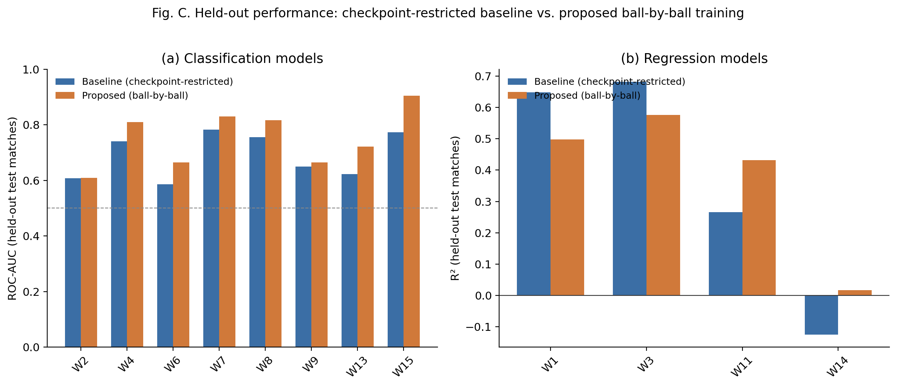
Of the twelve models with a directly comparable metric, eight improve under full-range training (W2, W4, W6, W7, W8, W9, W11, W13, W15 — nine, in fact, all classification models plus W11) and three decline (W1, W3, W12). W14, whose Suite A result was already disclosed as the weakest in the suite (R² −0.124), improves to a small positive R² (0.017) under Suite B — still weak, but no longer worse than predicting the mean. Section XII-B analyzes this pattern.
Table III. Batting-side models (B1–B15, excluding B4 and B7), trained once.
| ID | Tactical facet | Algorithm | Key metric(s) | Reliability |
|---|---|---|---|---|
| B1 | Run Projection | LightGBM regressor | R² 0.358, MAE 18.361 | 0.558 |
| B2 | Dismissal Risk | XGBoost (Cox survival) | 93.7% flagged high-risk vs. 90.5% actually dismissed | 0.600 |
| B3 | Shot Aggression (3-class) | CatBoost classifier | Acc 0.452 (baseline 0.333) | 0.515 |
| B5 | Strike Rotation | Logistic regression | ROC-AUC 0.749 | 0.699 |
| B6 | Partnership Stability | Random forest regressor | R² 0.511, MAE 10.060 | 0.711 |
| B8 | Powerplay Exploitation | CatBoost classifier | ROC-AUC 0.565 | 0.478 |
| B9 | Spin Vulnerability * | CatBoost classifier | ROC-AUC 0.602, precision 0.076 | 0.523 |
| B10 | Scoring Velocity | LightGBM regressor | R² 0.056, MAE 3.430 | 0.256 |
| B11 | Targeted Run-Rate | LightGBM regressor | R² 0.470, MAE 4.396 | 0.670 |
| B12 | Gap Analysis | k-Nearest neighbours | ROC-AUC 0.546 | 0.464 |
| B13 | Wicket-Loss Mitigation | Logistic regression | ROC-AUC 0.735, precision 0.102 | 0.682 |
| B14 | Acceleration Capability | LightGBM regressor | R² 0.149, MAE 1.250 | 0.349 |
| B15 | Death-Over Optimization | XGBoost regressor | R² 0.587, MAE 8.066 | 0.786 |
* Dataset limitation applies (Section XII-A).
Fig. 2 shows the ten most reliable models across both retrained suites for readability; the complete ranking, weak models included, is Table I, Table II, and Table III in full.
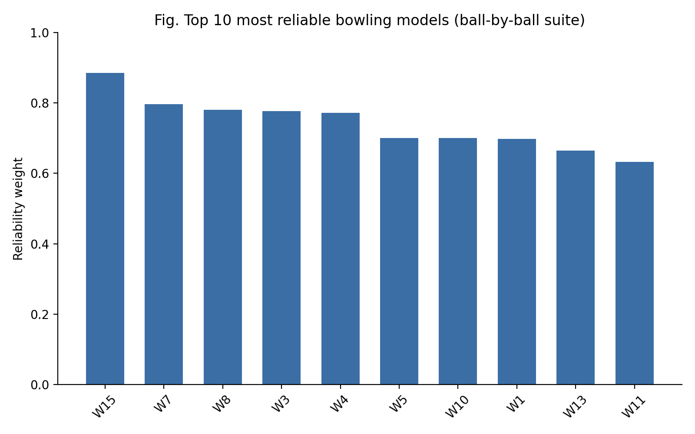
Fig. 15 (Model Suite B) shows W15's ROC curve and confusion matrix: AUC 0.904, accuracy 0.827, computed on 18,043 held-out deliveries — the largest improvement of any model in this paper's ablation, and the clearest single illustration of what full-range training can deliver when the underlying task does not depend on late-spell context (Section XII-B explains why).
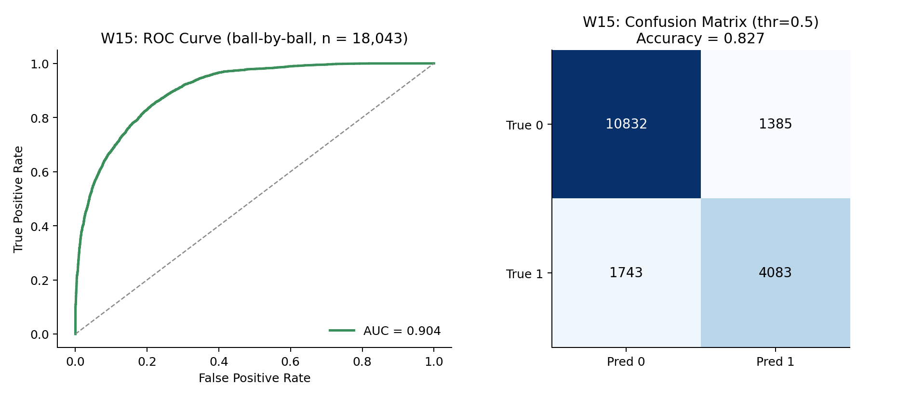
By contrast, Fig. 16 shows W1's predicted-versus-actual fit under Suite B: R² 0.498, visibly noisier than the same model's Suite A fit (R² 0.648, not reproduced here as a full plot; see Table I), the clearest single illustration of the opposite effect — full-range training can also make a target harder to predict, when the additional rows are systematically less informative than the ones the checkpoint-restricted suite selected for.
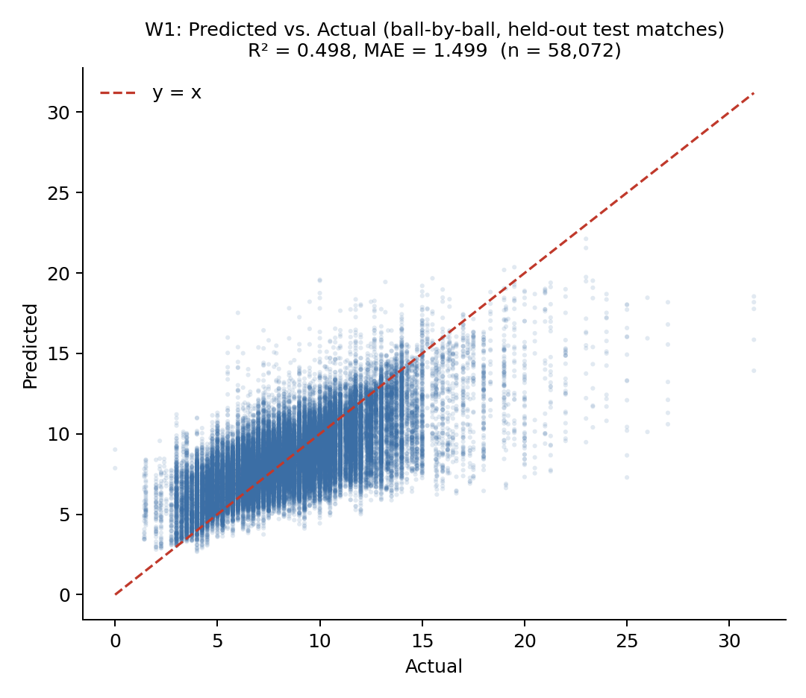
Three fields absent from the source dataset — bowler type, delivery type, and batter handedness — constrain what five of the 28 models can measure, identically for both suites: a model labelled "Spin Control" cannot condition on whether the bowler is actually a spin bowler; a model labelled "Yorker Effectiveness" cannot verify a yorker was bowled; a model labelled "L/R Matchup Bias" cannot see batter handedness. This is disclosed directly in the system configuration, precisely because it bounds the claims a user of the system's output should be willing to make; no amount of additional training data corrects for information that was never recorded in the source.
The pattern in Table II is not noise; it has a specific, testable explanation rooted in what each target actually measures. W1, W3, and W12 — the three models that decline under Suite B — all predict a quantity tied to a bowler's eventual spell outcome (final economy, final dot-ball percentage, future economy) from the current running state. Under Suite A, every training row is drawn from a checkpoint several overs into a bowler's likely spell, where the running-state features (current economy, dot-ball percentage) are already based on a reasonably informative sample of that spell. Under Suite B, training additionally includes early-spell deliveries — a bowler's first or second ball, where the running-state features are based on almost no evidence — for which the "eventual spell outcome" target is intrinsically noisier to predict from context alone. This directly matches the learning-curve and sample-size literature reviewed in Section II-H [44]–[48]: more training data does not uniformly improve a model when a meaningful fraction of the additional rows carry systematically less predictive signal for the specific target, and Suite B's row-selection change altered what kind of row was available, not only how many.
The nine models that improve under Suite B, by contrast, predict quantities that do not depend on spell maturity in the same way — wicket probability (W2), variation success (W4), line-and-length consistency (W6), spin and yorker effectiveness relative to a general baseline (W7, W8), phase-scoped containment (W9, W15), run-containment (W11), and matchup bias (W13) — and directly benefit from the 30- to 45-fold increase in training examples (Table 1) without the same early-spell noise penalty. W15's improvement from ROC-AUC 0.772 to 0.904 is the clearest case: restricted to the single over-5 checkpoint under Suite A (n = 448 test rows), the powerplay-containment classifier had comparatively little data to learn from; trained on every powerplay ball under Suite B (n = 18,043 test rows), the same algorithm and features produce a substantially stronger classifier, consistent with the sample-size literature's general finding that tree-based ensembles benefit disproportionately from scale when the additional data is task-relevant [45], [46].
A sharper case than any single R² or AUC number is B9 (Spin Vulnerability, Table III), whose ROC-AUC of 0.602 reads as merely mediocre in isolation but conceals a more specific failure: at the standard 0.5 threshold, B9's precision is 0.076 against a recall of 0.437 — of every delivery B9 flags as a dismissal -risk event, roughly 92.4% are false positives, a consequence of the severe class imbalance in a rare, phase-general wicket target. This is the concrete, model-specific version of the general point above: a single aggregate metric can understate how weak a model's usable signal actually is, which is precisely why the reliability-weighting mechanism (Section VII-C) is derived from the disclosed metric directly rather than a qualitative label a reader might otherwise assign from ROC-AUC alone.
Section II-D reviews the general risk of applying a model beyond its training distribution. This paper's design does not incur that risk in the way a naive extension might: rather than applying Suite A's checkpoint-trained models to arbitrary off-checkpoint deliveries — which would be a direct instance of the covariate shift Gama et al. and Quiñonero-Candela et al. describe [38], [40] — Section VI-D retrains directly on the distribution the system is actually meant to serve. This does not make distribution shift a solved problem: the retrained Suite B models are themselves only as representative as the training data they were fit on, which remains drawn from a single professional league (Section XII-D), and nothing in this paper's evaluation tests whether Suite B's performance holds under conditions genuinely absent from that league (a different pitch type, a different competition's scoring patterns). The honest claim this paper supports is narrower and more specific: applying a retrained, full-range model at an arbitrary ball is methodologically sounder than applying a checkpoint-trained model at the same ball, not that either model generalizes beyond the league it was trained on.
Extending validated coverage from four checkpoints to every delivery removes a capability gap, but it does not obviously improve decision quality on its own. The clinical decision-support literature reviewed in Section II-E finds that higher-frequency automated alerts measurably reduce acceptance rates and induce habitual dismissal [41], [42], and the general information-overload literature provides a theoretical account of why [43]. This paper's live console (Section VII-F) does not rate-limit or filter recommendations by significance — every delivery that can be scored will be scored — which means a real deployment would inherit exactly the alert-frequency risk this literature describes, untested by anything in this paper's evaluation, which is confined to offline, held-out validation of predictive accuracy rather than a live study of coaching -staff response to recommendation frequency. Section XV identifies a learned or rule-based significance filter — surfacing a recommendation only when the ranked action changes materially from the previous delivery, for instance — as a direct, unaddressed extension motivated by this discussion rather than an afterthought.
The reliability weight attached to every model is not only a performance -scaling device but a disclosure device: it makes visible, at the point of decision, exactly how much the system is choosing to trust each contributing signal. The audit trail produced by the RuleValidator retains the score and blocked/unblocked status of every ranked action, not only the winner. The coverage caveat appended when fewer than 60% of a role's models fire is a direct, human-readable statement of the recommendation's evidentiary basis in that specific context. None of these three mechanisms improves any individual model's accuracy; together, they are this paper's answer to the practical question a coach would reasonably ask before acting on a machine-generated, possibly-every-ball recommendation — not "is this system accurate on average," but "why is it telling me this, right now, and how much of the available evidence does it actually reflect." This is complementary to, not a substitute for, feature-attribution techniques such as SHAP [22] or LIME [23] applied to the individual models, which remains unaddressed in the present system (Section XV).
Table IV positions this work qualitatively against the closest categories of prior work identified in Section II, along the dimensions most relevant to its design goals: temporal scope, decision granularity, and whether the system's own training-scope choice was evaluated with a controlled ablation rather than assumed.
Table IV. Qualitative comparison with the closest prior approaches.
| Approach category | Representative work | Temporal scope | Decision output | Training-scope validated? |
|---|---|---|---|---|
| Pre-match / outcome prediction | T20 franchise-league win-prediction studies [2]–[4], [7] | Pre-match or coarse snapshot | Single scalar (win probability / outcome class) | N/A |
| Every-event continuous prediction (non-cricket) | NFL every-play win probability [33] | Continuous, every discrete event | Single scalar (win probability) | Not reported as an ablation |
| In-play cricket forecasting | Dynamic ODI/Test in-play models [5], [34] | Continuous or session-by-session | Single scalar (win probability) | Not reported as an ablation |
| Single-situation tactical AI | TacticAI (football corner kicks) [10] | In-match, single set-piece type | Ranked tactical suggestions for one situation type | Not applicable (single scope by design) |
| This work | — | Continuous, every legal delivery | Ranked multi-action recommendation with full audit trail | Yes — Table I vs. Table II, both directions reported |
Three points follow. First, this system's temporal scope is broader than any compared cricket-specific work: existing in-play cricket models [5], [34] update continuously but output a single win-probability scalar, not a ranked set of concrete tactical actions synthesized from many independently trained specialist models. Second, among systems that do output a concrete tactical suggestion, TacticAI [10] remains the closest architectural precedent in ambition, but addresses one narrowly bounded situation type with one learned model, rather than a continuously evolving, innings-wide decision using 28 models; the two systems are complementary points in the design space rather than directly competing solutions. Third, and specific to this paper's own contribution, none of the compared approaches report a controlled, same-methodology ablation of their own training-scope decision — whether to train on a checkpoint subset or the full event distribution — the way Section XI of this paper does; most either assume continuous coverage without testing a restricted alternative, or (in the case of checkpoint-scoped tactical systems) assume the restriction without testing a fuller alternative. This paper's Table I/Table II comparison is offered as a template other applied, event-scoped sports-analytics systems could adopt when making an analogous training-scope decision, independent of the specific sport or tactic targeted.
A direct, head-to-head quantitative comparison against TacticAI or the in-play win-probability literature was not attempted, for reasons more specific than "no shared benchmark exists": TacticAI's reported evaluation is a forced-choice preference judgement by professional coaches, a protocol measuring plausibility rather than any ground-truth label this paper's ranked actions could be scored against; in-play win-probability models output a different prediction target (a continuous probability, calibrated against completed-match outcomes) than a discrete tactical action; and no publicly available dataset pairs arbitrary T20 deliveries with an agreed-upon correct tactical response at all, so even a same-metric comparison would have no shared test set to run on.
This paper presented BOLT, a real-time decision-support system that aggregates 28 independently trained, narrowly scoped machine learning models into a single, ranked, and auditable tactical recommendation available after any delivery in a T20 innings, not a fixed subset of checkpoints. The system's central empirical contribution is a controlled ablation: an identical set of 15 bowling-side algorithms, trained once on a checkpoint-restricted subset of the data and once on the (near-)full delivery-level distribution, with both results reported honestly — eight models improving substantially under full-range training, three declining, and the pattern traced to a specific, testable cause (early-spell deliveries carrying less predictive context than late-spell deliveries for spell-outcome targets specifically) rather than left unexplained. The batting-side suite, largely already trained without a checkpoint restriction, required no equivalent retraining, and this paper documents that scope explicitly per model. A working FastAPI backend and React -based live console demonstrate genuine off-checkpoint, mid-over recommendation generation — situations a checkpoint-restricted design could not have served with statistical validity. Rather than treat continuous coverage as an unambiguous improvement, this paper engages directly with its two principal costs: the distribution-shift risk of applying a model beyond its training data, addressed here by retraining rather than extrapolating, and the alert -fatigue risk of higher-frequency automated recommendations, which remains an open, undeployed, and explicitly flagged limitation rather than a solved problem. The system is offered as a decision-support tool intended to surface and rank tactical options transparently, not to replace the judgement of a coach or captain, and its honestly reported limitations — dataset fields it does not have access to, models whose predictive power is weak or, in three cases, weakened by the very design choice this paper proposes, a single-league training dataset, and an unaddressed alert-frequency question — are intended to scope what a user of this system's output should, and should not, conclude from it.
Several directions follow directly from the limitations identified in Section XII. Extending the source dataset with delivery-type, bowler-type, and batter -handedness fields would allow the five affected models to measure the specific tactical distinctions their labels currently only approximate. A significance -gated recommendation layer — surfacing a new recommendation only when the top -ranked action changes materially from the previous delivery, rather than re-announcing an unchanged recommendation after every ball — is a direct, concrete response to the alert-fatigue discussion in Section XII-D, and is the most immediately actionable unaddressed extension this paper identifies. A systematic hyperparameter search, rather than the domain-informed fixed configurations used here, is a direct avenue for improving the models identified as weak in either suite, and could be conducted separately per suite given their different training-set scales. Applying feature-attribution techniques such as SHAP [22] or LIME [23] to the individual models would add a second, complementary layer of explainability beneath the decision engine's existing model-level audit trail. Beyond offline validation, a live evaluation with coaching staff — comparing recommendations accepted, overridden, or ignored against subsequent match outcomes, and directly measuring whether continuous coverage helps or harms decision quality relative to a checkpoint-restricted alternative — would test this paper's central open question in a way its held-out metrics cannot. Finally, extending the training dataset beyond a single professional T20 franchise league to other T20 leagues and to international T20 cricket would test, and likely improve, the generalization of the underlying models beyond the conditions of one competition, and would allow the distribution-shift discussion in Section XII-C to be extended from within-league, within-distribution retraining to a genuine cross-league generalization test.
[1] I. Wickramasinghe, "Applications of machine learning in cricket: A systematic review," Machine Learning with Applications, vol. 10, p. 100435, 2022.
[2] S. Priya et al., "Analysis and winning prediction in T20 cricket using machine learning," in Proc. IEEE Conf., 2022.
[3] A. V. Shenoy, A. Singhvi, S. Racha, and S. Tunuguntla, "Prediction of the outcome of a Twenty-20 cricket match: A machine learning approach," arXiv:2209.06346, 2022.
[4] S. Chakraborty, A. Mondal, A. Bhattacharjee, A. Mallick, R. Santra, S. Maity, and L. Dey, "Cricket data analytics: Forecasting T20 match winners through machine learning," Int. J. Knowledge-Based Intell. Eng. Syst., vol. 28, no. 1, 2024.
[5] M. Asif and I. G. McHale, "In-play forecasting of win probability in One-Day International cricket: A dynamic logistic regression model," Int. J. Forecasting, vol. 32, no. 1, pp. 34–43, 2016.
[6] R. A. Lokhande, R. N. Awale, and R. R. Ingle, "Forecasting bowler performance in One-Day International cricket using machine learning," Expert Syst. Appl., 2025.
[7] K. C. Srikantaiah, A. Khetan, B. Kumar, D. Tolani, and H. Patel, "Prediction of match outcome in a major T20 franchise league using machine learning techniques," arXiv:2110.01395, 2021.
[8] S. Kumar S, P. HV, and C. Nandini, "A survey on the application of data science and analytics in the field of organised sports," arXiv:2209.07528, 2022.
[9] R. P. Bonidia et al., "Computational intelligence in sports: A systematic literature review," arXiv:1810.12850, 2018.
[10] Z. Wang, P. Veličković, D. Hennes, N. Tomašev, et al., "TacticAI: an AI assistant for football tactics," Nature Communications, vol. 15, p. 1906, 2024.
[11] H. Xu, B. Lin, and L. Liu, "Design of intelligent optimization of sports strategy and training decision support system based on deep reinforcement learning," Discover Artificial Intelligence, vol. 5, p. 219, 2025.
[12] P. Pietraszewski et al., "The role of artificial intelligence in sports analytics: A systematic review and meta-analysis of performance trends," Applied Sciences, vol. 15, no. 13, p. 7254, 2025.
[13] S. Kranzinger, C. Halmich, and D. Hofer, "A scoping review of explainable artificial intelligence in sports science," Discover Artificial Intelligence, 2025.
[14] T. G. Dietterich, "Ensemble methods in machine learning," in Multiple Classifier Systems (MCS 2000), LNCS vol. 1857, Springer, 2000, pp. 1–15.
[15] D. H. Wolpert, "Stacked generalization," Neural Networks, vol. 5, no. 2, pp. 241–259, 1992.
[16] L. Breiman, "Random forests," Machine Learning, vol. 45, pp. 5–32, 2001.
[17] R. M. O. Cruz, R. Sabourin, and G. D. C. Cavalcanti, "Dynamic classifier selection: Recent advances and perspectives," Information Fusion, vol. 41, pp. 195–216, 2018.
[18] A. S. Britto, R. Sabourin, and L. E. Oliveira, "Dynamic selection of classifiers — a comprehensive review," Pattern Recognition, vol. 47, no. 11, pp. 3665–3680, 2014.
[19] S. Kaufman, S. Rosset, and C. Perlich, "Leakage in data mining: Formulation, detection, and avoidance," ACM Trans. Knowledge Discovery from Data, vol. 6, no. 4, 2012.
[20] S. Kapoor and A. Narayanan, "Leakage and the reproducibility crisis in machine-learning-based science," Patterns, vol. 4, no. 9, p. 100804, 2023.
[21] J. Bernett et al., "Guiding questions to avoid data leakage in biological machine learning applications," Nature Methods, vol. 21, pp. 1444–1453, 2024.
[22] S. M. Lundberg and S. Lee, "A unified approach to interpreting model predictions," in Proc. NeurIPS, 2017.
[23] M. T. Ribeiro, S. Singh, and C. Guestrin, "'Why should I trust you?': Explaining the predictions of any classifier," in Proc. ACM SIGKDD (KDD), 2016.
[24] C. Molnar, Interpretable Machine Learning: A Guide for Making Black Box Models Explainable, 3rd ed., 2025.
[25] J. H. Friedman, "Greedy function approximation: A gradient boosting machine," Annals of Statistics, vol. 29, no. 5, pp. 1189–1232, 2001.
[26] T. Chen and C. Guestrin, "XGBoost: A scalable tree boosting system," in Proc. ACM SIGKDD (KDD), 2016.
[27] G. Ke et al., "LightGBM: A highly efficient gradient boosting decision tree," in Proc. NeurIPS, 2017.
[28] L. Prokhorenkova, G. Gusev, A. Vorobev, A. V. Dorogush, and A. Gulin, "CatBoost: Unbiased boosting with categorical features," in Proc. NeurIPS, 2018.
[29] D. R. Cox, "Regression models and life-tables," J. Royal Statistical Society: Series B, vol. 34, no. 2, pp. 187–220, 1972.
[30] H. Van Eetvelde, L. D. Mendonça, C. Ley, R. Seil, and T. Tischer, "Machine learning methods in sport injury prediction and prevention: A systematic review," J. Experimental Orthopaedics, vol. 8, p. 27, 2021.
[31] A. Mahmood, S. Ullah, and C. F. Finch, "Application of survival models in sports injury prevention research: A systematic review," British J. Sports Medicine, vol. 48, no. 3, p. 630, 2014.
[32] I. Gómez-Méndez et al., "Benchmarking classical, machine learning, and Bayesian survival models for clinical prediction," arXiv:2509.10073, 2025.
[33] D. Lock and D. Nettleton, "Using random forests to estimate win probability before each play of an NFL game," J. Quantitative Analysis in Sports, vol. 10, no. 2, pp. 197–205, 2014.
[34] S. Akhtar and P. Scarf, "Forecasting test cricket match outcomes in play," Int. J. Forecasting, vol. 28, no. 3, pp. 632–643, 2012.
[35] S. Viswanadha, K. Sivalenka, M. G. Jhawar, and V. Pudi, "Dynamic winner prediction in Twenty20 cricket: Based on relative team strengths," in MLSA@PKDD/ECML Workshop, 2017.
[36] M. Allen and P. Savala, "Assessing win strength in MLB win prediction models," arXiv:2511.02815, 2025.
[37] S. Lamsal and D. Kahle, "In-game win prediction models for cricket," in Recent Advances in Next-Generation Data Science (SDSC 2024), Communications in Computer and Information Science, vol. 2158, Springer, 2024.
[38] J. Gama, I. Žliobaitė, A. Bifet, M. Pechenizkiy, and A. Bouchachia, "A survey on concept drift adaptation," ACM Computing Surveys, vol. 46, no. 4, Article 44, 2014.
[39] J. Lu, A. Liu, F. Dong, F. Gu, J. Gama, and G. Zhang, "Learning under concept drift: A review," IEEE Trans. Knowledge and Data Engineering, vol. 31, no. 12, pp. 2346–2363, 2019.
[40] J. Quiñonero-Candela, M. Sugiyama, A. Schwaighofer, and N. D. Lawrence (eds.), Dataset Shift in Machine Learning, MIT Press, 2008.
[41] J. S. Ancker, A. Edwards, S. Nosal, et al., "Effects of workload, work complexity, and repeated alerts on alert fatigue in a clinical decision support system," BMC Medical Informatics and Decision Making, vol. 17, Article 36, 2017.
[42] L. Wang et al., "Habit and automaticity in medical alert override: Cohort study," J. Medical Internet Research, vol. 24, no. 2, p. e23355, 2022.
[43] M. J. Eppler and J. Mengis, "The concept of information overload: A review of literature from organization science, accounting, marketing, MIS, and related disciplines," The Information Society, vol. 20, no. 5, pp. 325–344, 2004.
[44] S. Silvey and J. Liu, "Sample size requirements for popular classification algorithms in tabular clinical data: Empirical study," J. Medical Internet Research, vol. 26, p. e60231, 2024.
[45] O. Kalaycıoğlu, M. Pavlou, S. E. Akhanlı, M. A. de Belder, G. Ambler, and R. Z. Omar, "Evaluating the sample size requirements of tree-based ensemble machine learning techniques for clinical risk prediction," Statistical Methods in Medical Research, 2025.
[46] N. Mitsakakis, D. Liu, T. Walters, and K. El Emam, "Sample size calculation for training ensemble machine learning models on health data," Patterns, vol. 7, no. 6, p. 101498, 2026.
[47] R. D. Riley et al., "Importance of sample size on the quality and utility of AI-based prediction models for healthcare," The Lancet Digital Health, 2025.
[48] T. Viering and M. Loog, "The shape of learning curves: A review," IEEE Trans. Pattern Analysis and Machine Intelligence, vol. 45, no. 6, pp. 7799–7819, 2023.
[49] D. Crankshaw, X. Wang, G. Zhou, M. J. Franklin, J. E. Gonzalez, and I. Stoica, "Clipper: A low-latency online prediction serving system," in Proc. 14th USENIX Symp. Networked Systems Design and Implementation (NSDI '17), 2017, pp. 613–627.
The reliability-estimation script maps each model's validation metric onto a multiplier in the range 0.15–1.6, recomputed independently for Suite A and Suite B. In Suite B, observed reliability weights range from 0.205 (W12) to 0.885 (W15); the corresponding Suite A range was 0.200 (W14) to 0.879 (W3) — both suites' strongest and weakest components differ, a direct consequence of the ablation reported in Section XI.
The plots below are a representative sample of Suite B (proposed, full-range) bowling models, generated directly from the same current, verified CSV/JSON files as Table II.
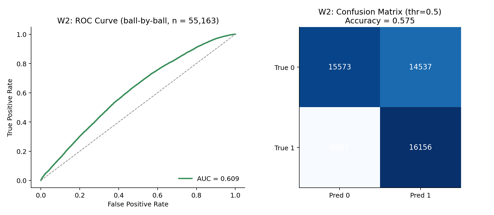
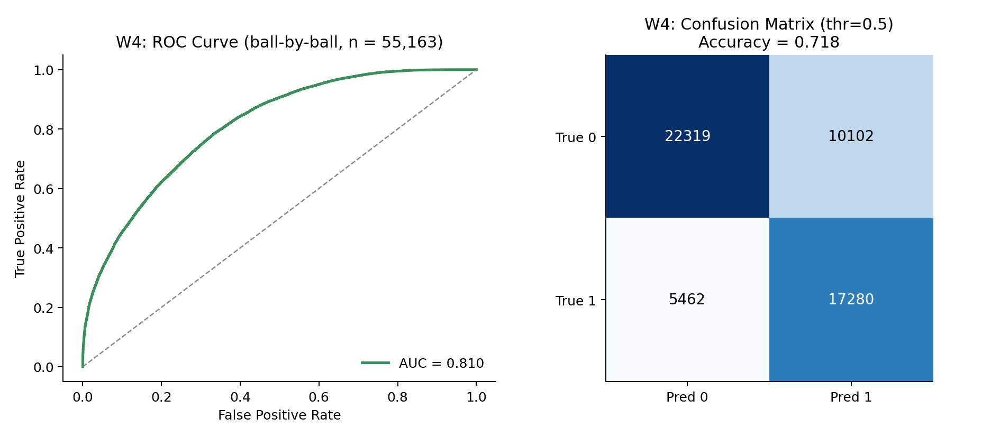
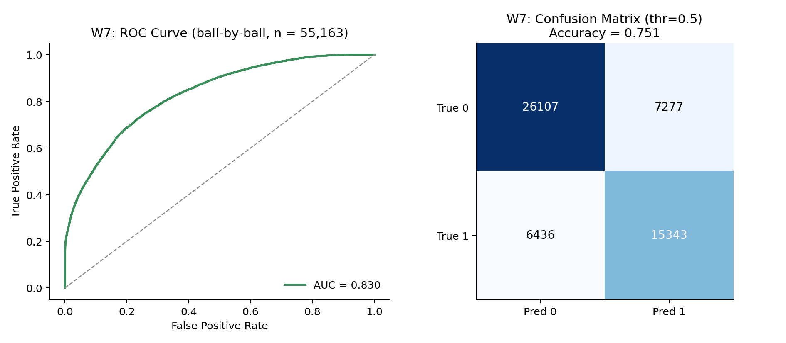
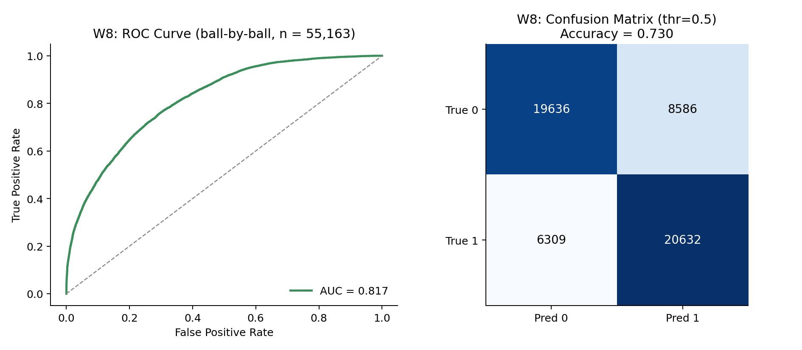
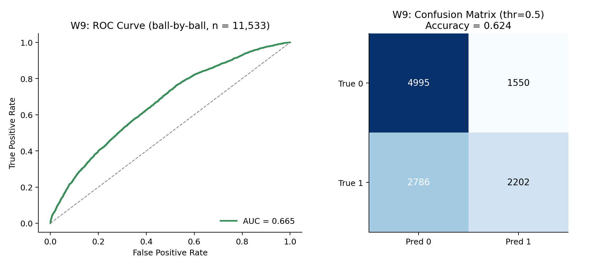
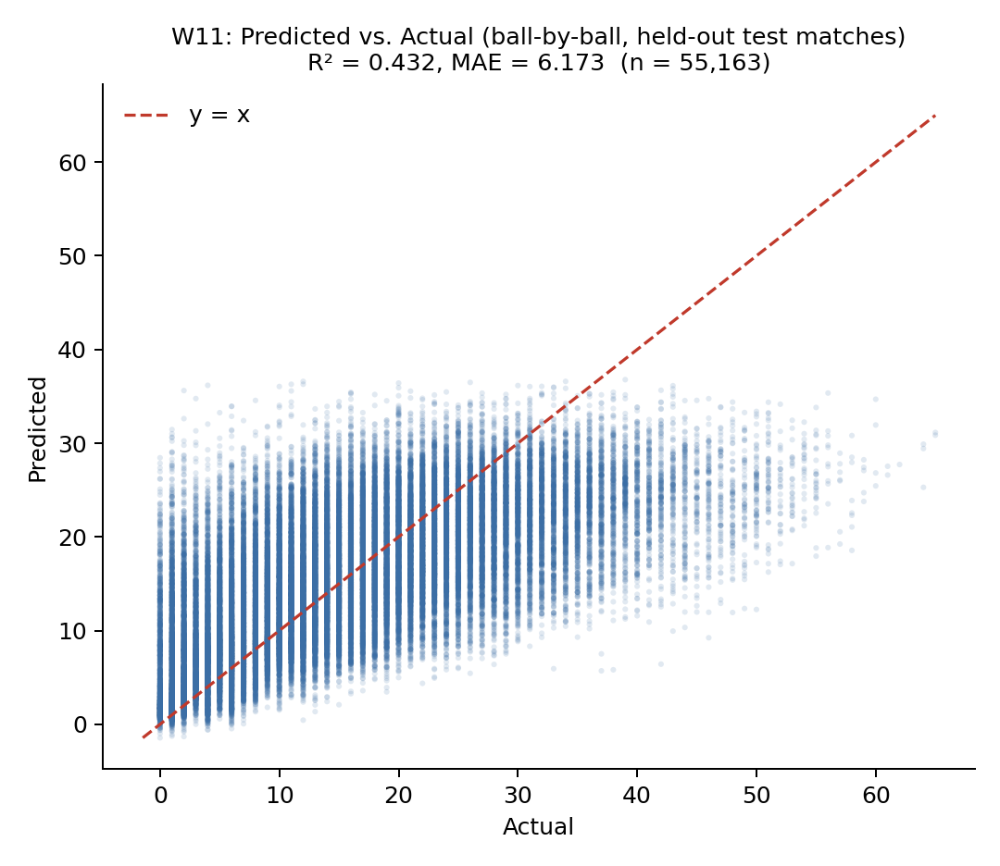
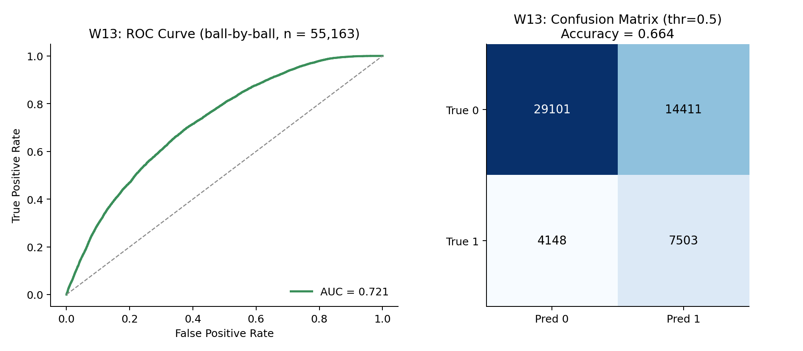
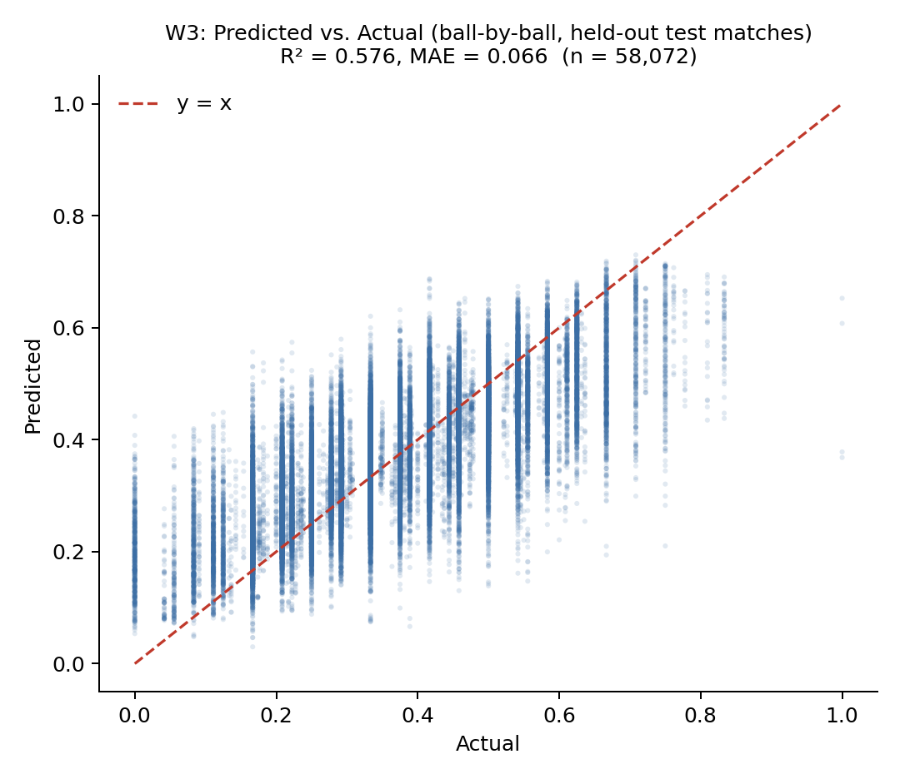